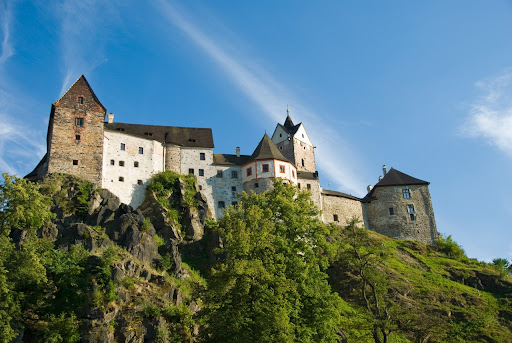
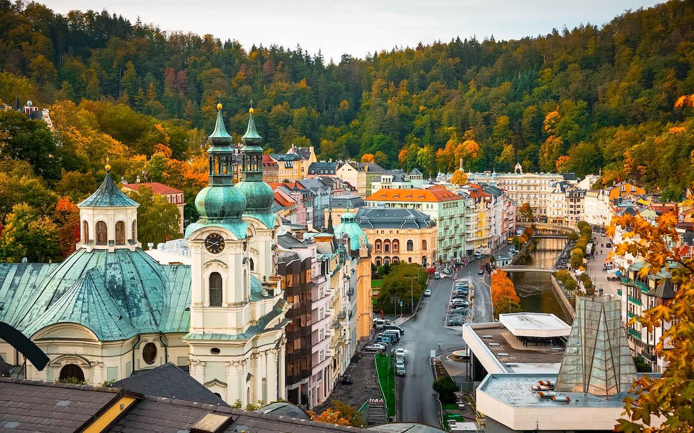
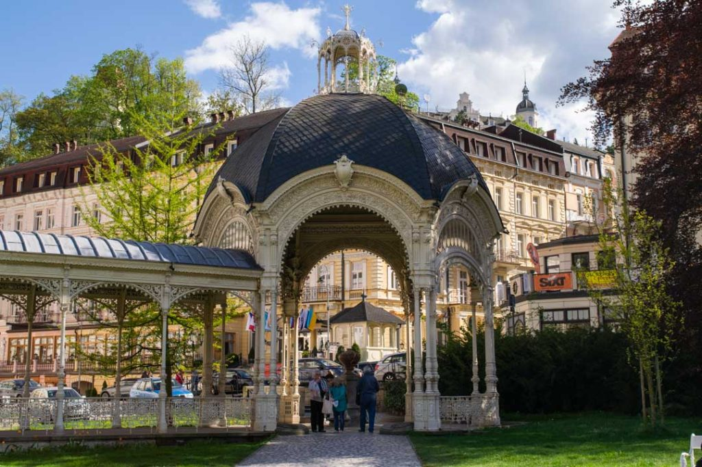
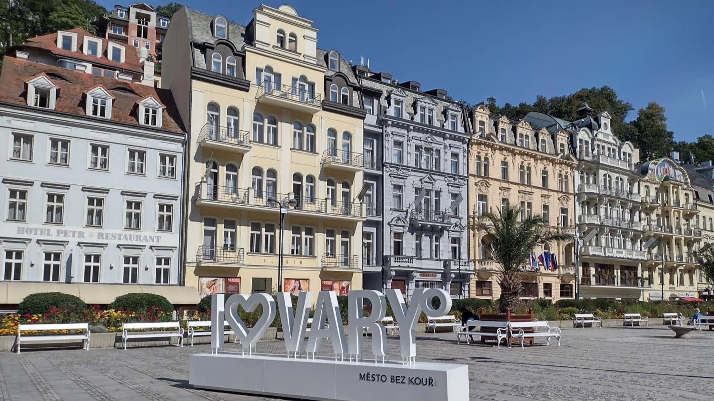

karlovy vary
Český Krumlov ( German: Böhmisch Krumau , or Krummau ) is a town in the South Bohemian Region of the Czech Republic , in the Český Krumlov District , 22 km southwest of České Budějovice . It is located below the crest of the Blanský Forest and the Vltava River flows through it . It is a tourist and cultural center of South Bohemia . It has a population of approximately 13 thousand [ 1 ] inhabitants.